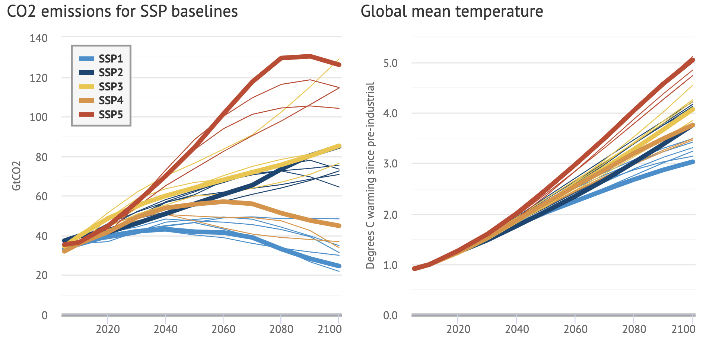
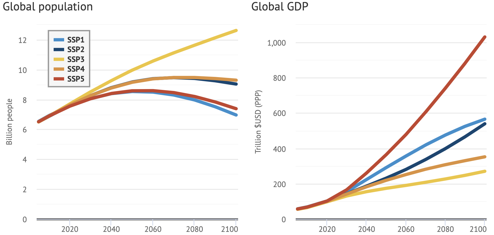
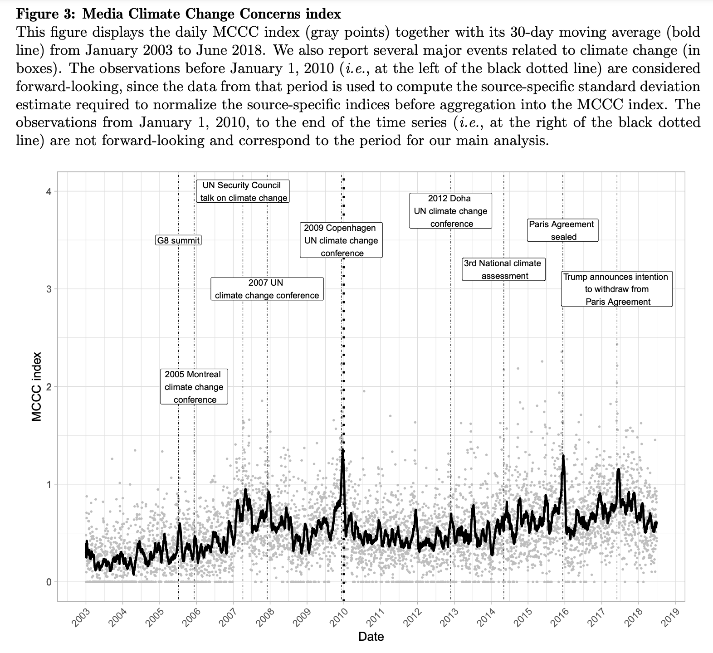

6 Climate risks
This section is dedicated to the impact of climate change on the economy and, relatedly, on financial markets. AND VICE VERSA!
6.1 The big picture: IPCC reports
First, it is imperative to accurately quantify what is meant by climate change (the less frightening name of global warming). The largest group of experts on this topic is the inter-governmental panel on climate change (IPCC). It has been working (collaborating) for decades and the amount of contributions is growing substantially in time.
6.1.1 IPCC flow large view
Below, we provide a chronological view of the major output of the IPCC, which are reports.
Nowadays, reports are written every 6 years roughly and are split in 3:
- the first report (from the first working group) deals with the physical sciences (trends on emissions, temperatures, the causes, etc.);
- the second report focuses on impacts: for human communities, biodiversity - all at the local level (because there are huge discrepancies in exposures to global warming). The report highlights vulnerable points and suggests ways we can adapt to rising temperatures and sea levels;
- the third and last report outlines mitigation solutions, strategies, efforts. It proposes the solutions to the problems.

6.1.2 IPCC flow: a closer look at the process
A natural question is why: only every 6 years! Because the whole process is very lengthy, as it requires the cooperation of hundreds (even maybe thousands) of scientists, and also needs to be reviewed thoroughly. The diagram below shows, from bottom to top, some of the steps of the last cycle.
Also, the reports are spaced because they need to rely on a large body of recent studies. Example, in France.
6.1.3 IPCC: how to read the docs
The IPCC reports are quite technical documents. It’s not always easy to dive into them. There are nomenclatures and jargon issues.
Below, we try to provide a bit of help in deciphering two excerpts.
Overall, we recommend to read the summarized versions. The full reports are often thousands of pages long, which is intimidating.
Ok, but what do people have in mind when they hear “likely”?
6.1.4 IPCC 2022: snapshots
Below, we provide a few graphs that summarize the findings of the 2021-2022 AR1.
First, a proof that global warming is man-made. Many climate deniers contend that we have nothing to do with it. The evidence is unequivocal. Humanity is responsible for rising temperatures and the reason is simple: massive greenhouse gases (GHG) emissions.
The decomposition of the causes is shown here:
First, the warming is clearly man-made. Also: even if CO2 dominates, methane is an important driver! From the Environmental Protection Agency (EPA)’s website: Methane is emitted during the production and transport of coal, natural gas, and oil. Methane emissions also result from livestock and other agricultural practices, land use and by the decay of organic waste in municipal solid waste landfills.
Okay, but what about really long trends? A [Science paper)(https://www.science.org/doi/10.1126/science.adk3705) tried to go back in time… up to more than 400 million years!

The IPCC proposes various scenarios for the future. They are called Shared Socioeconomic Pathways (SSP) - they have replaced the RCP (Representative Concentration Pathways) because now they encompass important indicators, such as temperature, global population and global GDP. These are based on emission trajectories over the long term and will generate different temperature conditions.
There are 5 SSPs:
| Shared Pathway | CO2 trajectory |
|---|---|
| SSP1 (or SSP1-1.9): Sustainability (Taking the Green Road) | CO2 emissions cut to net zero around 2050 |
| SSP2 (or SSP1-2.6): Middle of the Road | CO2 emissions cut to net zero around 2075 |
| SSP3 (or SSP2-4.5): Regional Rivalry (A Rocky Road) | CO2 emissions decrease, but still positive in 2100 |
| SSP4 (or SSP3-7.0): Inequality (A Road divided) | CO2 emissions double by 2100 |
| SSP5 (or SSP5-8.5): Fossil-fueled Development (Taking the Highway) | CO2 emissions triple by 2075 |
Each SSP is associated with a number (from SSP1-1.9 to SSP5-8.5), which represents a key physical number, the expected level of radiative forcing in 2100 (and not the change in temperature!). This measures the net amount of energy that Earth “retains” from the Sun. The planet receives a lot of energy, but also releases some in space. The net balance is called radiative forcing. If it is high, the planet keeps a lot of energy, and temperatures rise.
Currently, the world is arguably following a mix between the last four paths.
Interesting visualization: The pathways to meeting the Paris Agreement’s 1.5C limit
Below, we show the average paths of physical quantities (emissions) from the SSPs.
The impact in terms of forecasted temperature is:
Important socio-economic trajectories are:

Clearly, temperature-wise, SSP1 is optimistic, while SSP5 is the worst-case scenario. But note that all temperature (and GDP!) trajectories are upward.
In the long run, when emissions are stabilized, temperatures, too, will stabilize to an equilibrium point. The benchmark is the pre-industrial level (before we started to emit large volumes of GHG). It is now certain that, compared to this period, temperatures will be 1.5°C higher. But in fact, it could be much worse. The SSPs provide a range of views, but the most likely level is +3°C. Below, we show how this level, and its confidence interval has changed across the most important studies since the end of the 1970s. Progressively, the interval becomes narrower - there is less uncertainty, but the average level is quite high.
Ok, so it is now clear that the environment will change in the years and decades to come. But what’s the link with finance? To answer this question, we will start by emphasizing the link between nature and the economy.
6.2 The Kaya representation
The Kaya identity was developed by Japanese economists Yoichi Kaya and Keiichi Yokobori in the 1990s. Its purpose is to decompose \(CO_2\) emissions into simple chain blocks that are responsible for them. Its statement is:
\(CO_2=POP \times \frac{GDP}{POP} \times \frac{E}{GDP} \times \frac{CO_2}{E},\)
where \(E\) is energy, \(GDP\) is economic output and \(POP\) is population. Thus:
- \(\frac{CO_2}{E}\) is how much \(CO_2\) we need to produce a given amount of energy, i.e;, how green the energy we produce is;
- \(\frac{E}{GDP}\) is how much energy we need to create economic value, or, equivalently, how efficient we are with the energy we consume;
- \(\frac{GDP}{POP}\), GDP per capita, is a proxy for aggregate standard of living.
Therefore, mechanically, if we want to reduce emissions, we have to curtail one or several of these terms. Here are some comments:
-
\(\frac{CO_2}{E}\): this requires for instance shifting energy production to non carbon-based sources (nuclear, renewables);
-
\(\frac{E}{GDP}\): this means being able to produce more efficiently, with lower energy input;
-
\(\frac{GDP}{POP}\): this implies to accept possibly lower standards of living (e.g., travelling less, eating less meat, buying fewer clothes, etc. - consuming less in short);
- \(POP\): total population: well, this one is more tricky…
Let’s have a look at Kaya ratios for a few countries. For this, we again extract some figures from the World Bank API.
library(WDI) # Package that accesses World Bank data
country_list <- c("AF", "AR", "AU", "BR", "CA", "IN",
"CN", "DE", "DZ", "EG", "FR", "GB", # DZ = Algeria
"ID", "IR", "JP", "NG", "TR", "US")
wb_data <- WDI( # World Bank data
indicator = c("gdp" = "NY.GDP.MKTP.CD", # Gross Domestic Product (GDP)
"pop" = "SP.POP.TOTL"), # Total population
country = country_list, # Zones: world, US, France, etc.
start = 2021,
end = 2021)6.3 DICE models
6.3.1 Some key notions within DICE
In 2018, William Nordhaus received the Nobel prize in economics for his contributions in models that link the climate with economic output. The idea is simple and very much related to double materiality: if the economy hurts the environment (GDP \(\rightarrow\) T°), then at some point, the environment, like the Empire, will strike back (T° \(\rightarrow\) GDP). In the DICE model, this comes from damage functions, which assess by how much rising temperatures will hurt the economic output.
A simplified scheme of the model is presented below. We mostly follow the notations and links outlined in Revisiting the social cost of carbon.
The focal quantity in the model is the total welfare, computed over a finite time horizon:
\[\begin{equation} \large W=\sum_{t=1}^T U(c_t)L_tR_t, \end{equation}\] where \(U\) is a utility function, \(c_t\) is per-capita consumption, \(L_t\) is population (labor). Total consumption is therefore \(C_t=c_tL_t\). The rate \(R_t=(1+\rho)^{-t}\) is the discount factor on welfare (\(\rho\) being the pure rate of social time preference). In all studies, \(\rho\) is taken to be between 0 and 3%.
It is important to note that the objective, the welfare, depends on trajectories of future realizations. It is these paths that need to be modelled and estimated.
Total consumption is linked to net output \(Q_t\) and investment \(I_t\) by \(Q_t=C_t+I_t\) and \[\begin{equation} \large Q_t=\Omega_t(1-\Lambda_t)Y_t, \end{equation}\] where \(Y_t\) is gross output and \(\Omega_t\) and \(\Lambda_t\) are the damage and abatement-cost functions, respectively. The former is further decomposed into \(\Omega_t=D_t(1+D_t)^{-1},\) with \[\begin{equation} \large D_t=\psi_1 TAT_t+\psi_2TAT_t^2, \end{equation}\] where \(TAT_t\) is the total average temperature change. This implies that economic damage is proxied by a quadratic function of temperature change.
The “solution” of the model is obtained by maximizing the social welfare function W. This generates paths for all other variables.
The social cost of carbon (SCC) is then formally defined as:
\[\begin{equation} SCC = \frac{\frac{\partial W}{\partial E_t}}{\frac{\partial W}{\partial C_t}}=\frac{\partial C_t}{\partial E_t}, \label{eq:scc} \end{equation}\]
It’s the economic cost (in terms of global welfare) of emitting one additional ton of carbon dioxide into the atmosphere.
In terms of implementation, the 2016 DICE version is available:
- in R: https://github.com/olugovoy/climatedice
- in Python: https://github.com/hazem2410/PyDICE
6.3.2 DICE offspring
The original model was just the beginning. Since the first versions, scientists have refined it in several ways, with focus on the agriculture (REMIND MAgPIE), or the energy sector (MESSAGEix). The models that link the environment and the economy (+ other domains) are called Integrated Assessment Models (IAMs). The diversity in IAMs is such that researchers have created the IAM Consortium. A snapshot at the models: https://www.iamcdocumentation.eu/index.php/IAMC_wiki
Example of modules in REMIND-MAgPIE:
These more sophisticated models can be used to generate new scenarios, such as the following ones:
6.4 Use in applied financial models
The IAMs mentioned above are useful in finance because some of their output can be used in financial modelling.
6.4.1 NGFS scenarios
Network for Greening the Financial System (NGFS): a network of central banks and supervisors working on climate change and sharing best practices so that the financial system increases support to the transition towards a more sustainable economy. Like the IPCC, they propose scenarios that model links between climate, the economy and the financial system (basically, its climate \(\leftrightarrow\) economy \(\leftrightarrow\) finance). Below, we show a diagram that outlines the modellling channels (from a document called NGFS climate scenarios for central banks and supervisors):
Importantly, the methodology mentions two very different types of risks:
- physical risks: damages from hurricanes/flooding/fires, interruptions from heatwaves, threats frm rising sea levels;
- transition risks: carbon taxes, and governmental policies that penalize any pollution & waste malpractice.
While risks related to consumer behavior are included in transition risk, it’s possible to classify them into stakeholder risks, alongside with employee satisfaction for instance.
And like the IPCC, the NGFS relies on scenarios (from the NGFS technical documentation):
6.4.2 A peak at NiGEM
Nevertheless, the output of NGFS scenarios remain essentially economic, and not financial.
To get financial output, we turn to the National Institute Global Econometric Model (NiGEM) model (from the English National Institute of Economic and Social Research).
The paper Using NiGEM in uncertain times: Introduction and overview of NiGEM provides a detailed presentation of the model. Important features are the following:
-
agents are households (for consumption), firms (for production via labour & capital) and governments (for budget, taxes and monetary policy)
- dedicated equations drive important variables such as costs, wages, unemployment, international trade
- with respect to financial quantities, the model includes interest and exchange rates, as well as equity prices! The equation is \[E_t = \frac{PROF_t-TAX_t}{KP}+\frac{E_{t+1}KP_{t+1}}{(1+i_t)(1+Prem_t)KP_t,}\]
where
-
\(KP\) is private sector capital stock (serves as deflator/discount rate)
-
\(Prem\) is the equity premium
-
\(i\) is inflation
-
\(PROF\) are corporate profits
- \(TAX\) are direct (corporate) taxes
-
\(KP\) is private sector capital stock (serves as deflator/discount rate)
A “scary” overview of the links between modules is:
For practical purposes, a list of NiGEM financial outputs:
- Consumer price inflation
- Energy and commodity prices
- Interest rates
- Government bond yields
- Exchange rates between countries
- Equity market indices
- Real estate price indices (residential)
6.4.3 Generic climate-based valuation
For investors, it is useful to understand how the valuation of their assets may be impacted by climate change. Below, we propose a method that seeks to map risks from global warming into changes of corporate valuation. Below, we propose an approach that shares some similarities with A finance approach to climate stress testing in which the Merton model is used to disentangle the equity versus debt components of the valuation (change). An alternative source is the Climate Dividend Discount Model from Asset-level assessment of climate physical risk matters for adaptation finance.
First, we consider a baseline valuation, i.e., what happens if nothing changes (no climate change, no carbon tax = a “perpetual present”). The baseline would rely on some past data (e.g., 20-50 years). Then, given some additional data, e.g., on where plants are located (and how carbon intensive they can be), which green/tech patents firms have, etc., a calendar of change in cash flows is determined: \[\Delta CF_1, \Delta CF_2 \dots, \Delta CF_{15}\]
This is what will drive the variation in valuation. The change in cash-flow \(\Delta CF_i\) is simply \(CF_{climate}-CF_{base}\) at time \(i\), i.e., the estimate that include climate risks minus the one that does not (baseline value/scenario).
There are 3 dimensions that we can take into account:
- For the physical risks, we can consider several scenarios, e.g., coming from the SSPs. Moreover:
- Two types of hazards are taken into account: recurrent ones (heatwaves), and extreme ones (Ian-like storms).
- Two types of impacts: direct ones (damage, destruction) and indirect (interruptions, e.g., Hitzefrei).
- The change in cash flow, at the granular level \(i\), can be evaluated as \(\text{Cost}_i= d_iA_i+\frac{s_iR_i}{365}\), where \(d_i\) is an average damage rate, \(A_i\) is the cost of the asset, \(s_i\) is the # of days of interruption and \(R_i\) is the annual revenue.
- The damage functions can evaluated based on local data, annual reports, social networks, press articles, etc., possibly combined to machine learning algorithms. One example: for hurricanes, it is possible to leverage the CLIMADA model from ETH Zurich which yields average damage rates for geographical zones.
- Two types of hazards are taken into account: recurrent ones (heatwaves), and extreme ones (Ian-like storms).
- For the transition risks, the baseline scenario is +3°C objective from the REMIND climate model. This is the worst case scenario (climate-wise): costs are low because regulation is not stringent. Risk are assessed at the granular level (i.e., either paying taxes, or costs of reducing emissions). Several models can be used to generate trajectories for the cost of carbon (REMIND, IMAGE and GCAM).
- But there are also transition opportunities: data from patents can be processed (ex: EPO-PATSTAT (European Patent Office)) and uses keywords (possibly more advanced NLP) to filter companies that have e.g. low-carbon know-how.
- Patents are scored to evaluate their relevance & potential.
- The green profit for firm \(i\) can be assessed as \(\text{profit}_{t,i}=S_{t,i}\times R_{\text{t, sector}} \times M_i\), where \(S_{t,i}\) is the green tech share at time \(t\), \(R_{t,\text{sector}}\) are the revenues of the sector at time \(t\) and \(M_i\) is the profitability margin of the firm.
- Patents are scored to evaluate their relevance & potential.
In the end, we obtain the value of the firm via discounted cashflows:
\[V=\sum_{t=1}^T \frac{CF_t}{(1+r)^i} + \frac{CF_{T+1}}{(1+r)^{T+1}},\]
where \(CF_{T+1}\) is some terminal value and \(r\) is the WACC (weighted average cost of capital, between expected returns from equity (\(r_E\)) and debt (\(r_D\))):
\[r=r_E \frac{D}{V}+ r_D\frac{E}{V}.\]
In practice, \(r\) is usually obtained via a data provider.
Because we have two series of cash flows (\(CF_{base}\) and \(CF_{climate}\)), we have two values \(V_{base}\) and \(V_{climate}\). The relative change in valuation is then \[\%V = \frac{V_{climate}-V_{base}}{V_{base}}.\]
6.5 Going further (recent trends)
Below, we list a few topics that have seen a surge of interest lately:
-
quantification of climate-related concerns:
-
Natural Language Processing (NLP): ClimateBERT, see https://climatebert.ai/
-
Media coverage: Climate Change Concerns and the Performance of Green Versus Brown Stocks:

-
Natural Language Processing (NLP): ClimateBERT, see https://climatebert.ai/
- the impact of sustainable finance:
- shareholder engagement:
- efficiency of tax policy (papers are quite technical / theoretical):